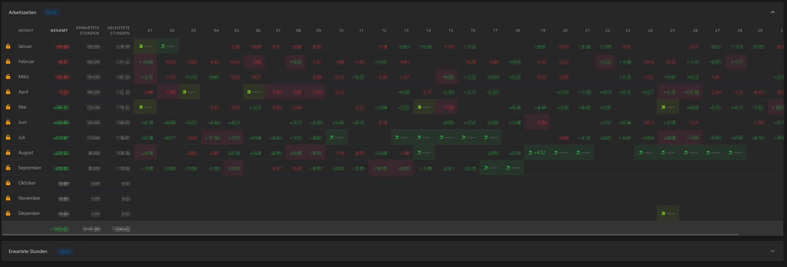
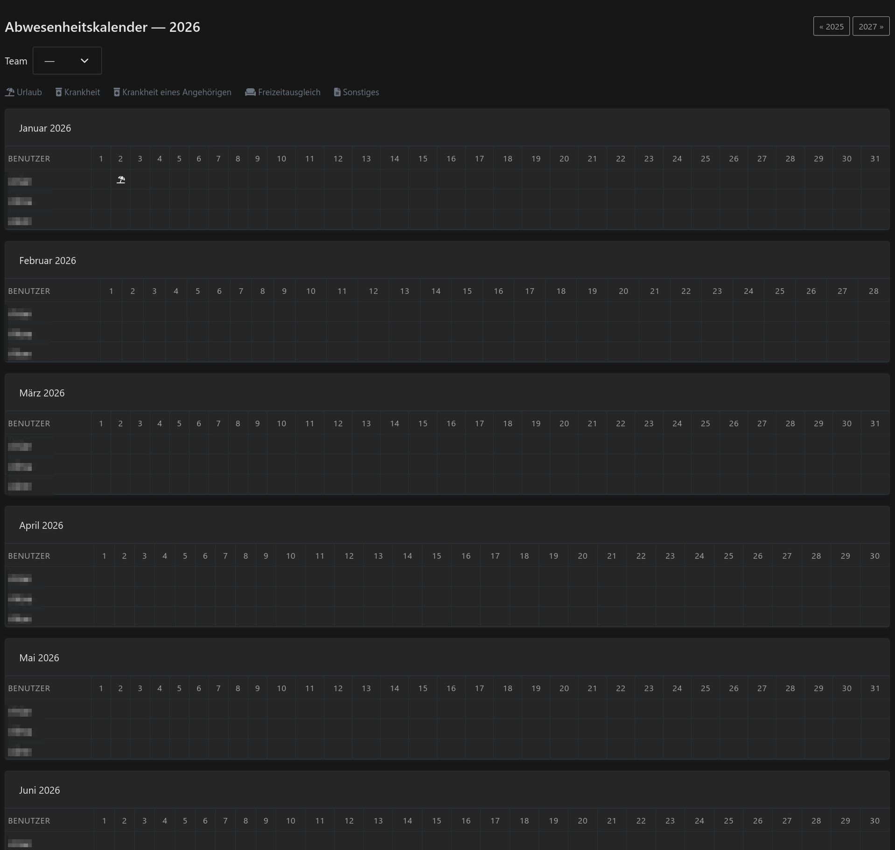

Working Times Integration
Integration in die Arbeitszeiten
Absences and public holidays appear directly in Kimai's Arbeitszeiten table — including known future days. Distinctive icons per absence type.
Abwesenheiten und Feiertage erscheinen direkt in der Arbeitszeiten-Tabelle von Kimai – auch bekannte zukünftige Tage. Eigene Symbole pro Abwesenheitsart.
Vacation & Absences
Urlaub & Abwesenheiten
Vacation (half-day), sickness (+ relatives), Freizeitausgleich, and custom types. Approval workflow with email notifications and edit-with-reapproval.
Urlaub (auch halbe Tage), Krankheit (+ Angehörige), Freizeitausgleich und eigene Arten. Freigabe-Workflow mit E-Mail-Benachrichtigung und erneuter Freigabe nach Änderungen.
Public Holidays via ICS
Feiertage per ICS
Import holidays from curated regional calendars (Germany, Austria, Switzerland, 30+ countries) or any custom ICS URL. Auto-sync via cron.
Feiertage aus kuratierten regionalen Kalendern (Deutschland, Österreich, Schweiz, über 30 Länder) oder einer beliebigen ICS-URL importieren. Automatischer Abgleich per Cron.
Per-User ICS Calendar
ICS-Kalender pro Nutzer
Each user gets a personal calendar subscription URL with public holidays and approved absences — locale-aware, for Outlook, Google, or Apple Calendar.
Jeder Nutzer erhält eine persönliche Kalender-Abo-URL mit Feiertagen und genehmigten Abwesenheiten – sprachabhängig, für Outlook, Google oder Apple Kalender.
Absence Calendar & Reports
Abwesenheitskalender & Berichte
Full-year absence calendar with team view, CSV export, and per-absence workday count. Weekends and non-working days are automatically excluded.
Abwesenheitskalender für das ganze Jahr mit Teamansicht, CSV-Export und Arbeitstage pro Abwesenheit. Wochenenden und arbeitsfreie Tage werden automatisch ausgenommen.
Month Locks & Settings
Monatssperren & Einstellungen
Lock months for approval. Configurable calculation modes (compensate vs reduce), comment requirements, and workday timesheet restrictions.
Monate zur Freigabe sperren. Einstellbare Berechnungsmodi (ausgleichen oder reduzieren), Kommentarpflicht und Einschränkungen für Zeiterfassung an Arbeitstagen.
Request, track and approve absences
Abwesenheiten beantragen, verfolgen und freigeben
The Absence page is where everyone books time off. Pick a type, set start and end, tick half day if needed and save. At the top, the vacation account shows your balance for the year, with links to the previous and next year and an export.
Auf der Seite Abwesenheit bucht jeder seine freie Zeit. Art wählen, Beginn und Ende setzen, bei Bedarf „Halber Tag“ anhaken und speichern. Oben zeigt das Urlaubskonto deinen Stand für das Jahr, dazu Links zum Vor- und Folgejahr und ein Export.
- Vacation, sickness, sickness of a relative, Freizeitausgleich and other
- Optional duration in hours for “other” absences, for example 4 for half a day; left empty it uses the contractual day length
- Only working days count, weekends are left out
- Approval workflow with email notifications; editing resets the approval when the type requires it
- A personal ICS link right on the page, which you can renew at any time
- Urlaub, Krankheit, Krankheit eines Angehörigen, Freizeitausgleich und Sonstiges
- Optionale Dauer in Stunden für „Sonstige“ Abwesenheiten, etwa 4 für einen halben Tag; leer nutzt die vertragliche Tageslänge
- Nur Arbeitstage zählen, Wochenenden bleiben außen vor
- Freigabe-Workflow mit E-Mail-Benachrichtigung; beim Bearbeiten wird die Freigabe zurückgesetzt, wenn die Art es verlangt
- Ein persönlicher ICS-Link direkt auf der Seite, den du jederzeit neu erzeugen kannst
Everything in the working times table
Alles in der Arbeitszeiten-Tabelle
Kimai’s own Arbeitszeiten year view gets the absences and public holidays added: one row per month, one column per day, with an icon for each type. Days that are not reached yet are shown too, so planned vacation is visible right away.
Die Jahresansicht Arbeitszeiten von Kimai bekommt die Abwesenheiten und Feiertage dazu: eine Zeile pro Monat, eine Spalte pro Tag, mit einem Symbol je Art. Auch Tage, die noch nicht erreicht sind, werden angezeigt, geplanter Urlaub ist also sofort sichtbar.

One calendar for the whole team
Ein Kalender für das ganze Team
The Absence calendar shows a full year, month by month, with one row per person. Choose a team from the drop-down, page through the years and use the legend to read the icons. The data can be exported as CSV.
Der Abwesenheitskalender zeigt ein ganzes Jahr, Monat für Monat, mit einer Zeile pro Person. Wähle ein Team im Auswahlfeld, blättere durch die Jahre und lies die Symbole in der Legende ab. Die Daten lassen sich als CSV exportieren.
- Team filter and year navigation
- Icons per type: vacation, sickness, sickness of a relative, Freizeitausgleich, other
- Seeing others needs the permissions
view_team_absenceorview_other_absence - Absences and public holidays also appear in Kimai’s own calendar
- Teamfilter und Jahresnavigation
- Symbole je Art: Urlaub, Krankheit, Krankheit eines Angehörigen, Freizeitausgleich, Sonstiges
- Andere zu sehen braucht die Rechte
view_team_absenceoderview_other_absence - Abwesenheiten und Feiertage erscheinen auch im eigenen Kalender von Kimai

Public holidays
Feiertage
Public holidays live in groups, and every user’s contract points to one group. Fill a group by hand, or import it from an ICS calendar and keep it in sync.
Feiertage liegen in Gruppen, und der Vertrag jedes Nutzers zeigt auf eine Gruppe. Befülle eine Gruppe von Hand oder importiere sie aus einem ICS-Kalender und halte sie synchron.
- Germany: curated calendars from ics.tools; other countries: Google holiday calendars or a custom URL
- Refresh stored feeds with
bin/console kimai:bundle:holiday:sync-ics - The official Kimai Docker image has no cron, so schedule that command on the host
- Editing public holidays needs the permission
edit_public_holidays
- Deutschland: kuratierte Kalender von ics.tools; andere Länder: Google-Feiertagskalender oder eine eigene URL
- Gespeicherte Feeds aktualisierst du mit
bin/console kimai:bundle:holiday:sync-ics - Das offizielle Kimai-Docker-Image hat kein Cron, plane den Befehl also auf dem Host ein
- Feiertage bearbeiten braucht das Recht
edit_public_holidays
Install
Installation
- Remove the commercial WorkContractBundle first if it is installed.
- Clone the plugin into
var/plugins/HolidayBundle; the folder name must stayHolidayBundleand containHolidayBundle.php. - Run
bin/console kimai:reload -nandbin/console kimai:bundle:holiday:install. In the official Docker image use the full path/opt/kimai/bin/consolewithdocker exec. - Assign the permissions under System → Roles, in the section Working Hours & Holidays.
- Set vacation days, holiday group and contract dates under Profile → Working contract.
- Entferne zuerst das kommerzielle WorkContractBundle, falls es installiert ist.
- Klone das Plugin nach
var/plugins/HolidayBundle; der Ordnername mussHolidayBundlebleiben undHolidayBundle.phpenthalten. - Führe
bin/console kimai:reload -nundbin/console kimai:bundle:holiday:installaus. Im offiziellen Docker-Image nutzt du mitdocker execden vollen Pfad/opt/kimai/bin/console. - Vergib die Rechte unter System → Rollen, im Abschnitt Working Hours & Holidays.
- Trage Urlaubstage, Feiertagsgruppe und Vertragsdaten unter Profil → Arbeitsvertrag ein.
System settings
Systemeinstellungen
- Calculation modes: compensate or reduce
- Comment required for absences
- Workday timesheet restriction, which can be bypassed with
workdays_override_timesheet - Automatic absence timesheets
- Month locks to approve and unlock months, with
approve_times_contractandunlock_times_contract
- Berechnungsmodi: ausgleichen oder reduzieren
- Kommentarpflicht für Abwesenheiten
- Einschränkung der Zeiterfassung an Arbeitstagen, umgehbar mit
workdays_override_timesheet - Automatische Abwesenheits-Zeiteinträge
- Monatssperren zum Freigeben und Entsperren von Monaten, mit
approve_times_contractundunlock_times_contract
Compatibility
Kompatibilität
- Requires Kimai ≥ 2.64 (PHP ≥ 8.1)
- Replaces the commercial WorkContractBundle / Controlling — do not install both at the same time
- Permission names and UX intentionally overlap so existing docs and habits transfer
- Benötigt Kimai ≥ 2.64 (PHP ≥ 8.1)
- Ersetzt das kommerzielle WorkContractBundle / Controlling – beide nicht gleichzeitig installieren
- Namen der Rechte und Bedienung überschneiden sich absichtlich, damit vorhandene Dokumentation und Gewohnheiten übertragbar sind
Permissions
Rechte
| PermissionRecht | PurposeZweck |
|---|---|
hours_own_profile / hours_other_profile | Working times screenArbeitszeiten-Ansicht |
contract_other_profile | Edit other users' contractsVerträge anderer Nutzer bearbeiten |
view_booking_contract / create_booking_contract | PDF / manual bookingsPDF / manuelle Buchungen |
approve_times_contract / unlock_times_contract | Month lock / unlockMonat sperren / entsperren |
absence, edit_*_absence, delete_*_absence | Absence UIAbwesenheits-Oberfläche |
view_team_absence / view_other_absence | Team / other users in reportsTeam / andere Nutzer in Berichten |
approve_*_absence / approval_other_absence | Approval workflowFreigabe-Workflow |
edit_public_holidays | Admin public holidaysFeiertage verwalten (Admin) |
REST API
REST-API
Questions
Fragen
Can I use it together with the commercial WorkContractBundle?Kann ich es zusammen mit dem kommerziellen WorkContractBundle nutzen?
No. The two cover the same feature area and permissions, so remove the commercial plugin first. Permission names and screens overlap on purpose, so existing documentation and habits carry over.
Nein. Beide decken denselben Funktionsbereich und dieselben Rechte ab, entferne also zuerst das kommerzielle Plugin. Namen der Rechte und Bildschirme überschneiden sich absichtlich, vorhandene Dokumentation und Gewohnheiten bleiben nutzbar.
Is it ready for production?Ist es produktionsreif?
It is experimental and entirely vibe-coded. Not everything is tested end to end, and the permissions around the approval workflow have not been fully verified: own against other users, team lead against admin, approve, reject, edit and delete. Test your roles carefully first.
Es ist experimentell und komplett vibe-codiert. Nicht alles ist Ende zu Ende getestet, und die Rechte rund um den Freigabe-Workflow sind nicht vollständig geprüft: eigene gegen andere Nutzer, Teamleitung gegen Admin, freigeben, ablehnen, bearbeiten und löschen. Teste deine Rollen zuerst sorgfältig.
Which calendars can I subscribe to?Welche Kalender kann ich abonnieren?
Every user has a personal ICS link on the Absence page with public holidays and approved absences, weekends excluded. It works in Outlook, Google Calendar and Apple Calendar, and you can renew the link at any time.
Jeder Nutzer hat auf der Seite Abwesenheit einen persönlichen ICS-Link mit Feiertagen und genehmigten Abwesenheiten, Wochenenden ausgenommen. Er funktioniert in Outlook, Google Kalender und Apple Kalender, und du kannst den Link jederzeit neu erzeugen.
Is there an API?Gibt es eine API?
Yes, a REST API under /api/holiday/… for absences, their approval and public holidays. See the examples above.
Ja, eine REST-API unter /api/holiday/… für Abwesenheiten, deren Freigabe und Feiertage. Beispiele stehen oben.